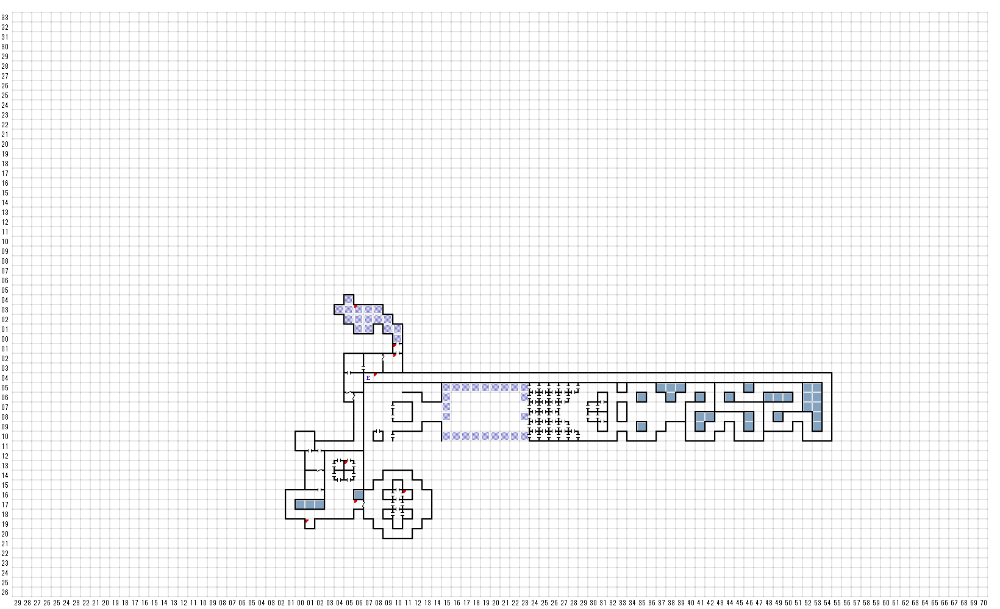

【 西：17，南：28 】
黒い円盤が床の上で静止している。
捜しますか（Y/N）?
円盤に触れるとそれはきらりと光って
次のような文字が現れた
アクセスゲート、作動！
【 西：17，南：34 】
黒い円盤が床の上で静止している。
捜しますか（Y/N）?
円盤に触れるとそれはきらりと光って
次のような文字が現れた
アクセスゲート、作動！
【 西：16，南：30 】
黒い円盤が床の上で静止している。
捜しますか（Y/N）?
円盤に触れるとそれはきらりと光って
次のような文字が現れた
アクセスゲート、作動！
【 西：15，南：21 】
扉にはこう書かれていた。
＊YE GOLD VAULT ＊
USE GOLD KEY
カチッ！
カタッ！
カツン！
【 西：15，南：26 】
床の真ん中には、不思議な言葉のような
ものが彫られた、四角の円盤がある。
ここには、4枚の円盤がある
（A）から（D）までの文字を押して
円盤にさわれ
(A)NOFE
(B)EITZ
(C)SAOT
(D)WUXT
【 西：15，南：29 】
床の真ん中には、不思議な言葉のような
ものが彫られた、四角の円盤がある。
ここには、4枚の円盤がある
（A）から（D）までの文字を押して
円盤にさわれ
(A)NOFE
(B)EITZ
(C)SAOT
(D)WUXT
【 西：15，南：32 】
床の真ん中には、不思議な言葉のような
ものが彫られた、四角の円盤がある。
ここには、4枚の円盤がある
（A）から（D）までの文字を押して
円盤にさわれ
(A)NOFE
(B)EITZ
(C)SAOT
(D)WUXT
【 西：13，南：24 】
黒い円盤が床の上で静止している。
捜しますか（Y/N）?
円盤に触れるとそれはきらりと光って
次のような文字が現れた
安全保管箱、開錠。
【 西：13，南：28 】
黒い円盤が床の上で静止している。
捜しますか（Y/N）?
円盤に触れるとそれはきらりと光って
次のような文字が現れた
警告！侵入者あり！
【 西：13，南：30 】
黒い円盤が床の上で静止している。
捜しますか（Y/N）?
円盤に触れるとそれはきらりと光って
次のような文字が現れた
安全保管箱、開錠。
【 西：12，南：25 】
黒い円盤が床の上で静止している。
捜しますか（Y/N）?
円盤に触れるとそれはきらりと光って
次のような文字が現れた
警告！侵入者あり！
【 西：12，南：28 】
黒い円盤が床の上で静止している。
捜しますか（Y/N）?
円盤に触れるとそれはきらりと光って
次のような文字が現れた
アクセスゲート、作動！
【 西：11，南：33 】
黒い円盤が床の上で静止している。
捜しますか（Y/N）
円盤に触れるとそれはきらりと光って
次のような文字が現れた
アクセスゲート、作動！
【 西：10，南：26 】
床の真ん中には、不思議な言葉のような
ものが彫られた、四角の円盤がある。
ここには、4枚の円盤がある
（A）から（D）までの文字を押して
円盤にさわれ
(A)NOFE
(B)EITZ
(C)SAOT
(D)WUXT
【 西：10，南：29 】
床の真ん中には、不思議な言葉のような
ものが彫られた、四角の円盤がある。
ここには、4枚の円盤がある
（A）から（D）までの文字を押して
円盤にさわれ
(A)NOFE
(B)EITZ
(C)SAOT
(D)WUXT
【 西：10，南：32 】
＊アクセスゲートをオンにすると出てくる
床の真ん中には、不思議な言葉のような
ものが彫られた、四角の円盤がある。
ここには、4枚の円盤がある
（A）から（D）までの文字を押して
円盤にさわれ
(A)NOFE
(B)EITZ
(C)SAOT
(D)WUXT
【 西：10，南：35 】
＊ THE JIGSAW BANK AND TRUST ＊
【 西：9，南：31 】
黒い円盤が床の上で静止している。
捜しますか（Y/N）
円盤に触れるとそれはきらりと光って
次のような文字が現れた
アクセスゲート、作動！
【 西：9，南：34 】
黒い円盤が床の上で静止している。
捜しますか（Y/N）?
円盤に触れるとそれはきらりと光って
次のような文字が現れた
警告！侵入者あり！
エンカウント
【 西：8，南：25 】
黒い円盤が床の上で静止している。
捜しますか（Y/N）?
円盤に触れるとそれはきらりと光って
次のような文字が現れた
アクセスゲート、作動！
【 西：8，南：28 】
黒い円盤が床の上で静止している。
捜しますか（Y/N）?
円盤に触れるとそれはきらりと光って
次のような文字が現れた
安全保管箱、開錠。
【 西：8，南：30 】
BUSTED BRAIN
LVL 8 THEIVES
ちょっとちょっと！情報はいらないかね？
250G.P...かかります
支払いますか
YES
ちょっとちょっと！
ネッシーの水たまりの近くに古い箱が隠されている・・・
【 西：6，南：17 】
* THE HALL OF MIRRORS *
【 西：3，南：20 】
*****
* LOONの部屋は *
* こちら *
****
＜回り道＞
玄関修理のため閉鎖中
秘密のトンネル使用のこと
【 西：1，南：24 】
たくさんの不思議な顔を持つ、巨大なトーテムが
いる愚痴の前に立っている。
その顔の内の、一つの目は、まるで君を見つめて
いるかのようだ。
と、その瞬間、口の一つがしゃべり始めた。
未来、現在、そして過去、子の幻影は、
すべての物に、あらゆる時間が長続き
するものだと信じこませようとしている。
だがしかし、心臓の鼓動も、呼吸の拍子も、
人の生誕から、死去の時まで、その一連の
動きを止めることはない。
あたかも夏の約束が、冬には激怒となり、
目に見えない道に沿って、息子が父親に
なるように。
未来と過去をあいまたぐ、子の幻影に、名を
つけるがよい。
そしてすべての幻影が消え去るなら、呪文は
その力を失うだろう。
答えは？
TIME
トーテムがこう告げた
汝、通るがよい。
【 東：1，南：19 】
壁には次のような 不思議な
図が書かれている。
! * *+、（
;=== U U ; '!
【 東：2，南：24 】
君の前には、小さな、一枚の石板があり、
頭上には銀色の月がかかっている。
そしてその石板の上のホコリをはらうと、
そこには次のような言葉が彫られていた。
＊＊＊ LOON ＊＊＊
＊＊＊ 安らかに眠れ ＊＊＊
＊ 彼の時は 再び やってこよう ＊
＊ その日まで 安らかであらんことを ＊
【 東：4，南：24 】
鉄製の分厚く巨大な扉が、西の壁の方に
ぼんやりと見えてくる。
その扉の真ん中には、象牙色の頭蓋骨の
顔がきらめいている。
USE SKELTON KEY
骸骨はウインクをしてこう言った。
”ようこそLOONの部屋へ”
【 東：5，南：13 】
ワナの扉！
（B5F E13 N2）に飛ばされる
litfeitがかかっていれば
だが、宙に浮いている
【 東：6，北：3 】
キラキラ輝く門
入ってみますか（Y/N）＞B1F E15 N9
【 東：6，南：17 】
東のぁべには、醜い悪魔の
笑った顔が彫られている。
USE
PETRIFIED DEMON
君は、不安を感じつつ、小さな像を持ったまま
あざけるような顔の前で待った・・・
突然、その彫像の口から銅色の霧が立ちのぼり
悪魔のような姿を作った。
そして、ガンガンするような声でこう告げた
”我が魂これらの壁を守り
我が肉体この部屋を守らん！”
壁から秘密の扉が現れた。
【 東：8，南：4 】
＊ＴHE LONG DUNGEON HALL *
【 東：9，南：9 】
黒い革を身にまとった、セクシーな女性がムチを
持って霧深い小さな水たまりの前に立っている。
「ぼうや、泳がないのかい？」
2500G.Pかかる
支払いますか（Y/N）?
彼女はムチをビシッと鳴らして笑った・・・
誰が潜る？
A：なにも起きなかった
B：なにも起きなかった
C:ダメージを受けた
D:毒に冒された眠らされた
E:ダメージを受けた＆エンカウントLOACH BABY30体くらい
F:マヒ＆エンカウントLOACH BABY30体くらい
G:死んだ＆エンカウントLOACH BABY30体くらい
H:PIETYを得た。年を取った＆エンカウントLOACH BABY30体くらい
I:石になった＆エンカウントLOACH BABY30体くらい
J:金を失った＆エンカウント 8 LOACH BABIES 1NESSIE
KEYゲット （SKELETON KEY）
【 東：10，南：1 】
＊ 伝説の ＊
＊ DEN OF THEIVES ＊
【 東：10，南：2 】
NPC 盗賊
THE TAISTIK MAN
俺は婦人の化粧室に入ったことがあるぜ
BUY MASTER KATANA 23625G？
RICK THE PICK
LA-LA MOO MOOってのはエジプト人よ。
JHON FINGERS
アヒルのやつがアヒルの子をなくしたんだと
【 東：11，南：16 】
美しいニンフが小さな箱の上で
甘い言葉をささやいている・・・
捜しますか（Y/N）
ニンフは君がその箱を開けるのを
まじまじと見つめた
ENCOUNT
1 THE COPPER DEMON
1 KALKYDRI
1 THE SLY NYMPH
3 MANES
CARD
(JACK of SPADE)